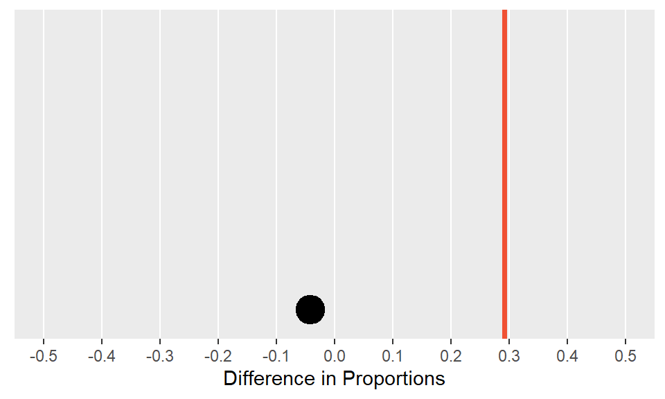
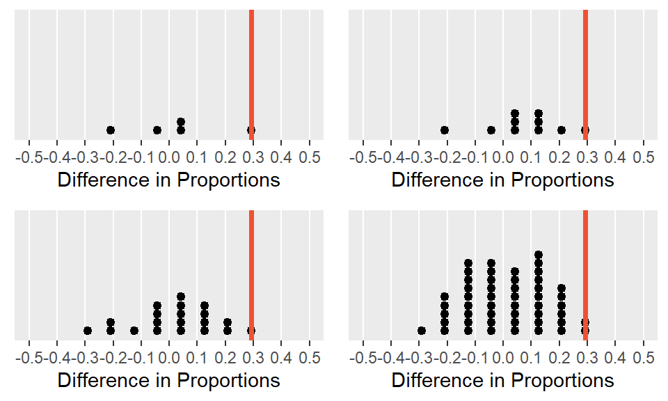
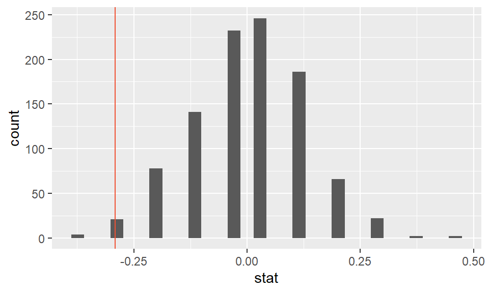

Completing a randomization test: gender discrimination
The example in this lesson is taken from a paper on the “Influence of sex role stereotypes on personnel decisions” by Rosen and Jerdee, 1974.
Forty-eight male bank supervisors were given personnel files and asked to judge whether the person should be promoted to a branch manager position. The files were all identical except that half of them indicated that the candidate was male and the other half indicated that the candidate was female.
The data were then collected showing that 14 out of the 24 female files were selected for promotion and 21 of the 24 male files were selected for promotion.
The data
| gender | promoted | not promoted | Total |
|---|---|---|---|
| male | 21 | 3 | 24 |
| female | 14 | 10 | 24 |
| Total | 35 | 13 | 48 |
Summarizing gender discrimination
As the first step of any analysis, you should look at and summarize the data. Categorical variables are often summarized using proportions, and it is always important to understand the denominator of the proportion.
Do you want the proportion of women who were promoted or the proportion of promoted individuals who were women? Here, you want the first of these, so in your R code it’s necessary to group by gender before you calculate the proportions!
The discrimination study data are available in your workspace as gender_discrimination.
- Using the
count()function, tabulate the variablesgenderanddecision. - Group the data by
gender. - Calculate the proportion of those who were and were not promoted in each gender and call this variable
prop.
gender_discrimination %>%
count(___, ___) %>%
group_by(___) %>%
mutate(___ = ___ / ___)gender_discrimination %>%
count(gender, decision) %>%
group_by(___) %>%
mutate(___ = ___ / ___)gender_discrimination %>%
count(gender, decision) %>%
group_by(gender) %>%
mutate(___ = ___ / ___)gender_discrimination %>%
count(gender, decision) %>%
group_by(gender) %>%
mutate(prop = ___ / ___)gender_discrimination %>%
count(gender, decision) %>%
group_by(gender) %>%
mutate(prop = ___ / sum(n))gender_discrimination %>%
count(gender, decision) %>%
group_by(gender) %>%
mutate(prop = n / sum(n))After summarizing the data, the difference in promotions can be identified using rates. That is, 58.3% of the women were promoted whereas 87.5% of the men were promoted. The important statistical question to ask after looking at the data is as follows: is it plausible to observe such a difference in proportions in a scenario where men and women are equally likely to be promoted?
Shuffling the data
If we shuffle the data so that gender and promotion are not linked in any way, what sort of chance differences are observed?
In the first shuffle of the data, we see that 17 women were promoted and 18 men were promoted, a difference in proportions of -0.04. Notice that the shuffled difference is closer to zero than the observed difference of 0.29.
First shuffle
| gender | not | promoted | Total |
|---|---|---|---|
| female | 7 | 17 | 24 |
| male | 6 | 18 | 24 |
| Total | 13 | 35 | 48 |

Keep in mind that a fixed number of male and female resumes were given out, 24 of each. Additionally, assume that there were a fixed number of people allowed to be promoted, here 35. However, the shuffling process breaks the relationship between gender and promotion decision, which allows us to understand the variability of the differences in promotion rates assuming there is no connection between the two variables.
Random chance?
Even though here gender doesn’t play a role in determining promotion, we still typically don’t have a difference of zero. That’s because of the natural variability associated with which manager gets which file. But the point of the randomization process is to identify how different the proportions can be naturally and, on the other hand, how big a difference would have to be to make us think something unusual was going on.
By shuffling the promotion variable repeatedly, not only do we see the variability in the null differences, but we also see that the observed statistic of 0.29 is on the extreme end of the plausible values generated by natural variability.


Gender discrimination hypotheses
Step-by-step through the permutation
To help you understand the code used to create the randomization distribution, this exercise will walk you through the steps of the infer framework. In particular, you’ll see how differences in the generated replicates affect the calculated statistics.
For simplicity, we’ll keep our permutation to just 5 replicates – in reality we would want this value to be much larger.
In the code chunk below,
- we start with our data frame:
gender_discrimination, - then we specify our model where
decisionis the response variable andgenderis the explanatory (grouping) variable, and we note that we’re calling"promoted"a success, - then we set our null hypothesis as
"independence"(no gender discrimination), and - finally we permute 5 times under the specification we outlined so far.
gender_discrimination %>%
specify(decision ~ gender, success = "promoted") %>%
hypothesize(null = "independence") %>%
generate(reps = 5, type = "permute")The resulting data frame has 240 rows: 48 observations per replicate (just like in the original gender_discrimination data) * 5 replicates.
In the next exercise,
- Re-generate a permutation just like above and save the result as
gender_discrimination_perm5. - Add a layer to
calculate()the statistic of interest. Setstatto"diff in props"andordertoc("male", "female")to subtract proportion of promoted females from proportion of males.
# Permute 5 timesgender_discrimination_perm5 %>%
specify( decision ~ gender, success="promoted")gender_discrimination_perm5 %>%
specify( decision ~ gender, success="promoted") %>%
hypothesize(null="independence")gender_discrimination_perm5 %>%
specify( decision ~ gender, success="promoted") %>%
hypothesize(null="independence") %>%
generate(reps=5, type="permute") gender_discrimination_perm5 %>%
specify( decision ~ gender, success="promoted") %>%
hypothesize(null="independence") %>%
generate(reps=5, type="permute") %>%
calculate(stat="diff in props", order=___)gender_discrimination_perm5 <- gender_discrimination %>%
specify(decision ~ gender, success = "promoted") %>%
hypothesize(null = "independence") %>%
generate(reps = 5, type = "permute")
calculate(stat = "diff in props", order = c("male", "female"))Well done! Each replicate had slightly different counts of promotion and gender, which led to slightly different statistics being calculated for each replicate.
Bumping up the reps
In this exercise, you’ll create a randomization distribution of the null statistic with 1000 replicates as opposed to just 5 in the previous exercise and then make a picture of the distribution. As a reminder, the statistic of interest is the difference in proportions promoted between genders (i.e. proportion for males minus proportion for females).
- Create a data frame of permuted differences in promotion rates
# Create data frame of 1,000 permuted differences in promotion ratesgender_discrimination_perm <- gender_discrimination %>%
specify(___, success = "promoted") %>%
hypothesize(null = "___") %>%
generate(reps = ___, type = "___") %>%
calculate(stat = "___", order = c("male", "female"))gender_discrimination_perm <- gender_discrimination %>%
specify(decision ~ gender, success = "promoted") %>%
hypothesize(null = "___") %>%
generate(reps = ___, type = "___") %>%
calculate(stat = "___", order = c("male", "female"))gender_discrimination_perm <- gender_discrimination %>%
specify(decision ~ gender, success = "promoted") %>%
hypothesize(null = "independence") %>%
generate(reps = ___, type = "___") %>%
calculate(stat = "___", order = c("male", "female"))gender_discrimination_perm <- gender_discrimination %>%
specify(decision ~ gender, success = "promoted") %>%
hypothesize(null = "independence") %>%
generate(reps = 1000, type = "permute") %>%
calculate(stat = "___", order = c("male", "female"))# Create data frame of permuted differences in promotion rates
gender_discrimination_perm <- gender_discrimination %>%
# Specify decision vs. gender
specify(decision ~ gender, success = "promoted") %>%
# Set null hypothesis as independence
hypothesize(null = "independence") %>%
# Generate 1000 permutations
generate(reps = 1000, type = "permute") %>%
# Calculate difference in proportions
calculate(stat = "diff in props", order = c("male", "female"))- Draw a histogram of permuted differences.
- Using the permutation dataset,
gender_discrimination_perm(which we already calculated), plot the distribution of test statistics (stat). - Specify a histogram layer with
geom_histogram(), where thebinwidthis set to0.01. - Add a vertical line with
geom_vline(), and specify thexinterceptas 29.2, the difference in promotion rates between males and females in the original data set.
# Using permutation data, plot stat
ggplot(gender_discrimination_perm, aes(x = ___)) +
# Add a histogram layer
___(binwidth = 0.01) +
# Add a vertical line at diff_orig
___(aes(xintercept = ___), color = "red")ggplot(gender_discrimination_perm, aes(x = stat)) +
___(binwidth = 0.01) +
___(aes(xintercept = ___), color = "red")ggplot(gender_discrimination_perm, aes(x = stat)) +
___(binwidth = 0.01) +
___(aes(xintercept = ___), color = "red")ggplot(gender_discrimination_perm, aes(x = stat)) +
geom_histogram(binwidth = 0.01) +
___(aes(xintercept = ___), color = "red")# Using permutation data, plot stat
ggplot(gender_discrimination_perm, aes(x = stat)) +
# Add a histogram layer
geom_histogram(binwidth = 0.01) +
# Add a vertical line at diff_orig
geom_vline(aes(xintercept = diff_orig), color = "red")Null distribution
It seems as though the statistic— difference in promotion rates of 0.2917—is on the extreme end of the permutation distribution. That is, there are very few permuted differences which are as extreme as the observed difference.
To quantify the extreme permuted (null) differences, we calculate a p-value.
Definition of p-value
A p-value is the probability of observing data as or more extreme than what we actually got, assuming the null hypothesis is true.
In this example, the p-value (0.03) is the probability of observing a difference of 0.2917 or greater assuming that promotion rates do not vary across gender.
Calculating the p-values
p-value measures the degree of disagreement between the data and the null hypothesis. Here, you will calculate the p-value for the original discrimination dataset.
Recall that you’re only interested in the question, “Are men more likely to be promoted than women?” Thus, the p-value (which represents how often a null value is more extreme) would be calculated by counting the number of null values which are greater than the original difference.
To retrieve the p-value, we can use the get_p_value() function, which comes in the infer package. This function has three arguments (inputs):
- a dataset with permuted statistics (output from
generate()) - the observed statistic (
obs_stat) - the direction of the alternative hypothesis (“greater”, “less”, or “two-sided”)
We can also use the visualize() function to visualize where the observed statistic falls in the distribution of permuted statsitics, and shade the direction that the p-value was calculated from. The visualize() function has many inputs (find out more by typing ?visualize in your console), but the most important ones are the same as the get_p_value() function!
Now, use the visualize() and get_p_value() functions for the original dataset. First visualize() where the p-value lies on the distribution, and then calculate the p-value.
- You can test out the different methods for calculating the p-value by trying out:
direction = "greater",direction = "two_sided", anddirection = "less".
# Visualize and calculate the p-value for the original dataset
gender_discrimination_perm %>%
___(obs_stat = ___, direction = "___") %>%
___(___, ___)# Visualize and calculate the p-value for the original dataset
gender_discrimination_perm %>%
visualize(obs_stat = diff_orig, direction = "greater") %>%
get_p_value(obs_stat = diff_orig, direction = "greater")Well done! You may have noticed that the observed statistic is borderline “significant” (p-value = 0.03) for the original data.
Practice calculating p-values
In the original dataset, 87.5% of the men were promoted and 58.3% of the women were promoted.
Consider a situation where there are 24 men, 24 women, and 35 people are still promoted. But in this new scenario, 75% of the men are promoted and 70.8% of the women are promoted. Does the difference in promotion rates still appear to be “statistically significant”? That is, could this difference in promotion rates have come from random chance?
You’ll analyze these new data, contained in gender_discrimination_new, using the same permutation algorithm from before.
- Calculate the proportion of those who were and were not promoted in each gender and call this variable
prop.
#Code from before
#gender_discrimination %>%
# count(gender, decision) %>%
# group_by(gender) %>%
# mutate(prop = n / sum(n))# Count the promotions for each gender in the new data
gender_discrimination_new %>%
count(gender, decision) %>%
group_by(gender) %>%
mutate(prop=n()/sum(n))- Create a new permutation dataset,
gender_discrimination_new_permusing the specify, hypothesize, generate and calculate workflow.
gender_discrimination_new_perm <- gender_discrimination_new %>%
specify() %>%
hypothesize( ) %>%
generate( ) %>%
calculate( stat=___)- Calculate the p-value of the new permutation dataset,
gender_discrimination_new_perm, and the new observed difference.
gender_discrimination_new_perm %>%
visualize() %>%
get_p_value(________)# Recall the p-value from the original data
gender_discrimination_perm %>%
summarize(p_value = mean(diff_orig <= stat))
# Find the p-value from the new data
gender_discrimination_new_perm %>%
summarize(p_value = mean(diff_orig_new <= stat))Great work! Notice that the permutation differences (the two histograms) are essentially the same regardless of whether the original or the new dataset is used. Why do you think that is?
Hint: Does the null hypothesis depend on the dataset, or is it the same for both?
Calculating two-sided p-values
What if the original research hypothesis had focused on any difference in promotion rates between men and women instead of focusing on whether men are more likely to be promoted than women? In this case, a difference like the one observed would occur twice as often (by chance) because sometimes the difference would be positive and sometimes it would be negative.
When there is no directionality to the alternative hypothesis, the hypothesis and p-value are considered to be two-sided. In a two-sided setting, the p-value is double the one-sided p-value.
In this exercise, you’ll calculate a two-sided p-value given the original randomization distribution and dataset.
The observed difference is stored in diff_orig and the difference in each permutation is the stat column of gender_discrimination_perm.
Use the summarize() function to calculate the two-sided p-value. You will use the p-value calculation from the previous exercise, and make the modification that the p-value is equal to twice the value of the original.
# Calculate the two-sided p-value
gender_discrimination_perm %>%
summarize(p_value = ___)gender_discrimination_perm %>%
summarize(p_value = 2 * mean(___ <= stat))# Calculate the two-sided p-value
gender_discrimination_perm %>%
summarize(p_value = 2 * mean(diff_orig <= stat))Good job! Notice, from the calculation, that the two-sided p-value is twice as big as the one-sided p-value. Two-sided p-values are often advocated for, as a way of avoiding making false “significance” claims.
Summary of gender discrimination
The observed gender discrimination data is not really consistent with the permuted null differences. Only 30 of the 1000 permuted differences were larger than or equal to the observed statistic. That is, we would have observed data like ours only 3% of the time if men and women were equally likely to be promoted.
gender_discrimination_perm %>%
summarize(pvalue = mean(diff_orig <= stat)) 
Pay special attention to how the p-value is computed here. First we identify permuted differences that are larger than or equal to the observed statistic and label those situations TRUE (or a value of 1), all other permutations FALSE (or a value of 0). By averaging the 0s and 1s, we can use the mean() to find the proportion of times the permuted difference is larger than or equal to the observed difference.
Because 0.03 is less than 0.05, we decide to reject the null hypothesis in favor of the alternative, claiming that men are promoted at a higher rate than women. That is, we conclude that it was not simply random variability which led to a higher proportion of men being promoted. A p-value of 0.03 is reasonably close to 0.05 which means we should be somewhat careful in making strong claims. We should take the results as a indication that more work should be done on the claims. Indeed, in 40 years since this research was published, many social scientists have been able to replicate research on gender discrimination in the workforce.
Because the study was randomized, that is, they randomly assigned the resumes to the managers, there is nothing systematically different about the two groups except the name on the resume. As an example, it wouldn’t make sense to have given the female resumes to the first 24 managers who arrived at the training. Those early arriving individuals might be less inclined to promote anyone given their strict adherence to being on time.
The only difference in the two groups, both the participants as well as the resumes, was the name on the top of the resume.
Therefore, we can conclude that any difference in promotion rates is due to the gender of the applicant. That is, we can infer a causal connection between the gender of the applicant being male and a higher promotion rate.
The 35 individuals in the sample were not randomly sampled from all possible American bank managers; they were at a management training session. In order to generalize the results of the study to a larger population, we would need more information about the study and careful thinking about who the study participants might represent.